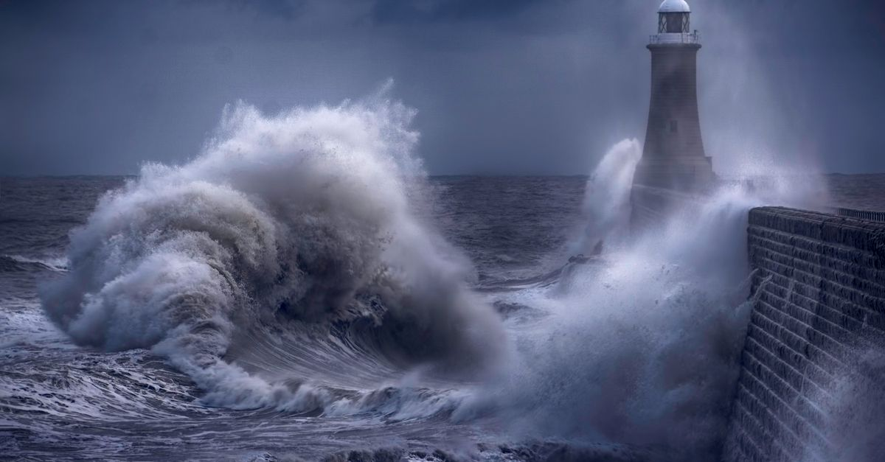
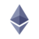

週次市場レポート2026年10月26日（月）
今週の3行まとめ
- 週足判定は2週連続の不合格。終値 $80,154 はライン $82,814 を −3.2% 下回り、割れ幅は前週（−0.96%）の約3倍に拡大。土曜の安値 約$79,200 は前週安値を更新し、検証ゾーンの第1節目にタッチしました。
- 木曜は「Everything Sell-Off」。AI 企業の資金調達不安を引き金に株・BTC・金が同時安となり、買われたのは国債だけ（10年金利は1日で −17bp 超＝2年超ぶりの下げ幅で 4.96% へ）。金まで週 −4.1%（$4,000 割れ）の換金売りでした。
- 警報器は信用スプレッドが格上げ初週に 3.40% の新ピークへ続伸。そしてアルトでは ZRO 剥落・STRK 出尽くし・AAVE 全消滅・Q 逆回転 と、「期待先行→剥落」の教材が1週間で4例揃いました。
| 側 | 材料 | 位置づけ |
|---|---|---|
| 弱気 | 週足終値 $80,154 で2週連続割れ・幅は約3倍（−3.2%）・前週安値も更新 | 検証ゾーン第1節目にタッチし、週明けに明確割れ |
| 弱気 | 信用スプレッド 3.40% 新ピーク（格上げした初週に続伸） | 金利低下の中でスプレッドだけ拡大する「質の悪い」形が2週目 |
| 弱気 | BTC 現値が ETF の推定平均コスト帯（$81,500〜82,000）を初めて下回った | ETF 買い平均が含み損圏入り・$81,500 奪回が強気側の条件に |
| 弱気 | アルトの下方ベータ2週目: BTC −2.4% の週に主要アルトは −8〜28% | 防衛ライン戦績 0勝3敗・ARB はゾーン下抜けで決着 |
| 強気 | 50週移動平均線（実測 $76,000〜76,500）比 +5.3〜5.8% は維持・$77,000 未到達 | 「ライン割れ＝即シナリオ棄却」ではない状態は継続 |
| 強気 | ETF 週計 +$301M と3週ぶりの週間純流入（月水だけで +$1,075M） | ただし木金 −$773M の急反転 — 中身の評価は分かれる |
| 強気 | 10年金利 4.96%・利上げ観測は 5% まで消滅（明日からの FOMC は据え置き 94% 織り込み） | 金利面の逆風は剥落。ただし低下の原因が「質への逃避」なら両義的 |
| 両義的 | 金 −4.1%（$4,000 割れ・7月以来最悪の週）・銀 年初来 −24% | 「BTC だけが弱い」のではなく「全部が換金された」週という証拠 |
今週の一行: 「2週連続のライン割れで検証ゾーン第1節目にタッチ。AI 資金調達不安の Everything Sell-Off で株・BTC・金が同時安となり、10年金利は 4.96% へ急低下・利上げ観測は消滅。警報器は信用スプレッド 3.40% 新ピーク続伸 — そして『期待先行の教材』が1週間で4例揃った週」。
答え合わせ — 2週連続割れ、検証ゾーンの「深さ」を測る段階へ
先週「初のライン割れ・ただし浅い」とお伝えした週足判定。今週は割れ幅が約3倍（−3.2%）へ拡大し、問いが「割れたか」から「どこまで深く入るか」へ変わりました。
- 判定の結果
- 2週連続の不合格。終値 $80,154（集計により $80,049〜80,485）はライン比 −$2,660 前後（−2.8〜−3.3%）で、割れ幅は前週の約3倍。週間では −1.9〜−2.4% の下落週です。
- 週の形
- 水曜に $85,000 寸前まで急騰（ショートの踏み上げ）→ 木曜の Everything Sell-Off で全戻し → 土曜に週安値 約$79,200 で前週安値を更新 → 週明けの今朝も $80,000 割れ。高安 $5,700 の往復で、方向よりも「清算の往復」が主役でした。
- ETF の二面性
- 週間では +$301M と3週ぶりの純流入。ただし中身は「月水 +$1,075M → 木金 −$773M」の急反転で、木曜単日 −$636M は6月以来の最大流出。そして現値は ETF の推定平均コスト帯（$81,500〜82,000）を初めて下回りました — $81,500 の奪回が強気側の条件です。
- シナリオの現在地
- 講師想定は「③もう底を打った」60% ／「①+② まだ下がある」40%（据え置き）。今週の実測は「検証ゾーン入り」から「深度評価の段階」へ。下の節目は 約$79,200（今週安値）→ $77,600 → $77,000 → 50週線 $76,000〜76,500。評価の更新は本日の配信で講師からお伝えします。
FOMC 直前の論点整理 — 利上げ観測は消滅した。なのに、なぜ下げたか

明日 10/27（火）から FOMC です。据え置き 94%・利上げ 5% と結果はほぼ織り込み済み — 1週間で 28%→16%→8%→5% と、利上げ観測は事実上消滅しました。ならば木曜に売られた理由は金利ではありません。
- 何が起きたか
- 10/22（木）、AI 企業の資金調達不安を引き金に全資産が売られました。大手テック決算と新株発行の発表を受けて関連企業の社債保証コストが過去最高となり、ナスダック −2.6%（6月以来最悪）・半導体指数 −6.7%。欧州では仏国債も売られ（金利は2002年以来の水準）、BTC は一時 $81,000 割れ・24時間清算 約$431M でした。
- 資金の行き先
- その日買われたのは米国債だけ。10年金利は1日で −17bp 超（2年超ぶりの下げ幅）の 4.96% へ低下し、1か月ぶりに 5% を割れました。金も週 −4.1%（$4,000 割れ・7月以来最悪の週）、銀は年初来 −24% — 安全資産まで売られる「換金売り」の色が濃い1日です。
- 整理
- 先週お伝えした「良い金利低下と悪い金利低下」の続編です。金利が下がったのは利上げ観測の剥落に加えて質への逃避の側面が強く、「金利低下＝追い風」とは今週も単純化できません。一方で「BTC だけが弱い」のでもなく、全部が換金された週でした。
警報器ダッシュボード — 主語は引き続き「信用」。金すら逃げ場にならなかった
黒い縦線が先週の位置、色付きバーが今週の位置です。先週「格上げ」した②信用スプレッドは、初週からさらに新ピークへ続伸しました。解除できた計器は今週もゼロです。
外部リサーチの視点 — 48日間未公開・隔週刊3号分のスキップが確定
講師が定点観測している外部リサーチ（隔週レポート）は本日時点で48日間未公開となり、隔週刊として3号分のスキップが確定しました（配信フィード自体は稼働しており、休刊ではなく低頻度化の状態）。「不定期アーカイブ」運用を継続し、公開を検知したら最優先で差分をお届けします。
| 前号の枠組み | 今週までの実際 | 評価 |
|---|---|---|
| 重要サポートが耐えれば「7月安値＝底」が確定 | 週足2週連続割れ（−3.2%）・週安値は前週安値を更新・週明けも $80K 割れ | 判定は前週より一段と際どく — 50週線 +5.3% が最後の砦 |
| 「50週線への最初の突破試行は通常失敗する」 | 終値は50週線の +5.3〜5.8% 上（+8.6% → +7.2% → +5.3% と縮小継続） | 定着は維持・ただし「試行失敗」側へ接近中 |
| 「年内の追加利上げは生きている」（少数派の読み） | 10月は消滅（5%）・12月 76〜79% へ収斂 | 「10月スキップ・12月1回」へ — 12月分が最後の判定機会 |
| Q4 は金がビットコインに優位（リスクオフ想定） | 金 週 −4.1%（$4,000 割れ）vs BTC 週 −2% 前後 | 「金＞BTC」は2週で終了 — 換金売り局面では安全資産も売られる実例 |
BTC が検証ゾーンに入った今、前号の「底値判定」の答え合わせは次号の最重要チェック項目です。複眼の確保は、他の外部識者の分析と本レポートの実測定点で代替します。
急騰銘柄は今週1本だけ — そして「期待先行の教材」が4例完成した
時価総額上位100位以内で 7日間 +20% 超は、先週の3件からさらに減って今週は1件のみ。市場全体が −3% の週に件数がここまで絞られること自体が、物色の冷え込みを示すシグナルです。そして今週の主役は新しい急騰ではなく — 過去3週の急騰銘柄たちの「答え合わせ」が一斉に出たことです。
要因: 市場 −3.2% の中の逆行高＝市場連動では説明できない固有の動きです。ただし確定できる材料は見つからず（各報道とも「明確なトリガー不明」）、週末の閑散時間帯に瞬間 $1.14 まで刺さって即反落する値動きでした。
見方: 極端な薄商い・アンロック接近 日次出来高は時価総額のわずか 0.08%（BTC の約1/13）で、少額の資金で大きく動く構造です。11/1 に日次出来高の約30日分に相当するロック解除が控えており、「一過性」評価の答え合わせは来週。
「期待先行 → 剥落」の答え合わせ — 1週間で4例完成
ここ3週間レポートで観察してきた「材料が期待段階の銘柄」の答えが、今週まとめて出ました。4本とも下方向です。
| 銘柄 | 期待の中身 | 今週の結果 | 確定した教材 |
|---|---|---|---|
| ZRO | ロック解除を買い戻し装置が吸収できるか（10/20 解除・流通の約6%） | 解除当日〜2日は耐えて反発（$2.01）→ 木曜の全市場売りと重なって4日目に $1.77 を下抜け → $1.66（週 −12%・ピーク比 −29%） | 遅発剥落型（第3の型） 即日型とも事前消化型とも違う「数日遅れて割れる」型。※全市場売りと同時のため供給要因と断定はせず、$1.77 奪回がない限りこの判定を維持 |
| STRK | 独立 L1 移行の是非投票（10/22 締切）が可決されれば… | 賛成 93.5% で可決 — しかし価格は1ミリも上がらず続落。$0.0446（週 −26%・最高値比 −99%） | 出尽くしの確定例 「材料が“検討・期待”のみの銘柄は、材料が実現しても上がらないことがある」の完成形 |
| AAVE | バーン（買い戻し焼却）期待の急騰（9/29 起点）→ 四半期コールで詳細発表のはず | 4週連続で開催日程すら出ないまま $134（週 −12%） — 起点価格を割り込み「全戻し」を通り越した | 期待先行の全消滅・完成形 日程未定のまま6週間で急騰分が消えた記録 |
| Q | 先週 +457% の急騰（材料不明のショートスクイーズ・RSI 93.8） | −64%（$0.175 → $0.058・時価総額 $824M → $274M・88位 → 145位）の完全逆回転 | 過熱指標が機能した事例 「RSI 90 超＋建玉が時価総額の 64%」という先週の定量的な危険信号どおりの結末 |
次のテストは 11/2（月）BTW のロック解除（日次出来高の約7倍・3例目）。BTW はすでに9日前から −36% の前倒し剥落が進んでおり（$1.57・最高値比 −43%）、ZRO 型の「事前消化」かさらなる崩落かを 11/5 までの値持ちで最終判定します。
講師注目銘柄フォロー（配信で言及された銘柄）
| 銘柄 | 先週 | 今週 | 状況 |
|---|---|---|---|
 LDO LDO | $0.3976 | $0.362（−8.4%） | 講師が先週「ルール通り一旦クローズ」と判断した後、火曜に +4% 反発 → 木曜に全戻し → クローズ時点を約8〜9%下回る新安値圏。数値上はルール遵守のクローズが下げ回避として機能（評価・再イン判断は講師から） |
| ONDO | $0.4367 | $0.400（−8.1%） | LDO と同じ経路（+6% 反発 → 全戻し → クローズ時点以下）。2銘柄とも「反発は2日もたず」でした |
 ARB ARB | $0.1932 | $0.169（−13.5%） | $0.19〜0.20 ゾーンを下抜けて攻防決着（敗北側）。3週続いた攻防はダウンサイドで終了 |
 NEAR NEAR | $5.05 | $4.48（−11.5%） | 2週連続の2桁安。逆行高だった9月分の上昇はほぼ全戻し |
| MORPHO | $2.43 | $2.01（−18.2%） | 先週「最も底堅い」とお伝えした1本が、今週は保有系で最弱に。下方ベータの波が一巡した形 |
 ETH | $2,426 | $2,305（約−5%） | BTC（−2%台）より弱い週が3週目。ETH の ETF も週 −$221M の流出 |
BTC −2.4% の週に主要アルトは −8〜28% — 下方ベータの2週目です。防衛ライン3本の戦績は 0勝3敗（ARB 決着負け・LDO 奪回失敗・NEAR 続落）。唯一の明るい材料は「自分で決めたルール通りに動けたこと自体が損失回避として機能した」という運用規律の実証でした。※ 個別銘柄の記載は市場観察の記録であり、売買をすすめるものではありません。
来週に向けて — イベント密集週の監視ポイント
答えが出るイベント（日付順）
- 10/27-28（火水）FOMC — 据え置き 94% 織り込み。声明・会見でのエネルギーインフレの扱いと「12月 76〜79%」の追認が焦点。10/28 は BTC 大量保有の米上場企業の臨時株主総会と同日（優先株の条件変更の可否）。
- 10/29（木）米コア PCE・ECB ／ 10/30（金）日銀 — 中銀ウィーク後半。
- 11/1（日）週足終値 — 3週連続割れなら 50週線（$76,000〜76,500）攻防が現実化。上は $81,500（ETF コスト帯上限）奪回が条件。
- 11/2（月）BTW ロック解除 — 3例目のテスト本番（前倒し −36% 済み・日次出来高の約7倍）。11/5 までの値持ちで最終判定。
- 11/3（火）米中間選挙 — 下院は民主 91% でソース一致・上院はソースにより 50:50〜民主優位 64% と幅が大きい状態。結果確定後の規制トラックへの含意も。
- 11/6（金）米雇用統計。
警報器の定点観測
- 最優先: 信用スプレッド — 3.40% からの続伸有無。3.5% 台に乗せたら質的悪化の加速と判定
- 10年金利 4.96% — 5% 台への復帰か、4.9% 割れへの低下継続か（低下なら「質への逃避」の深刻度とセットで点検）
- 原油 $101 — $100 割れが出るか（$110 からの反落継続なら警戒一段緩和の初動。ホルムズ海峡の新規攻撃件数も記録継続）
そのほか
- ETF: コスト帯割れ状態での流出が続くか（木金の −$773M が単発かどうか）
- 金 $4,000 攻防 — 換金売りの継続か FOMC 後の反発か
- ZRO $1.77 奪回の有無（奪回なしなら「遅発剥落型」判定を維持）／ MemeCore は 11/1 アンロック通過後の値持ち
- 外部リサーチの次号検知（公開されたら最優先で総括をお届け）